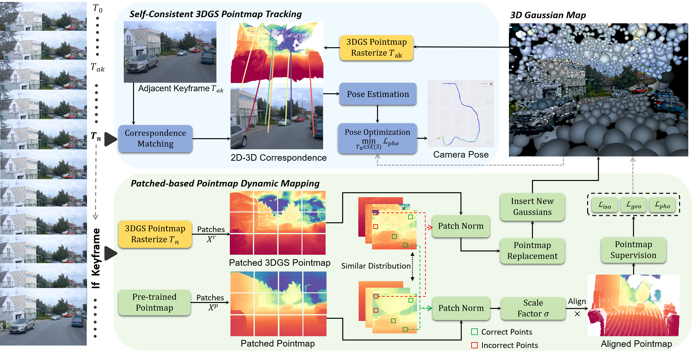
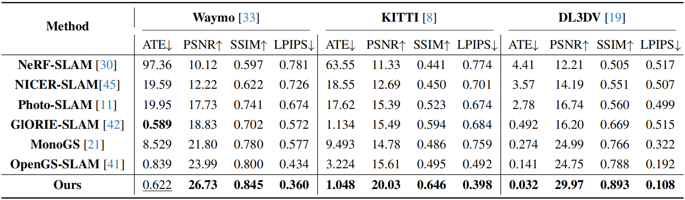

\(\textbf{Localization and novel view synthesis results on KITTI.}\) Our method S3PO-GS maintains robust tracking and high-quality novel view synthesis even in cases of large-angle turns. This is achieved through our self-consistent 3DGS pointmap tracking and the patch-based pointmap dynamic mapping module.
SLAM System Pipeline
The system begins by initializing a 3D Gaussian map. For new input frame \(T_n\), we rasterize the 3DGS pointmap of the adjacent keyframe \(T_{ak}\), match it with the input image, and establish 2D-3D correspondences to estimate scale self-consistent pose. The estimated pose is further refined using photometric loss. If \(T_n\) is selected as keyframe, we obtain its rendered pointmap \(X^r\) and pre-trained pointmap \(X^p\), then crop both into patches with similar distributions. After patch normalization, the correct points are selected to compute a scaling factor, which is then used to adjust \(X^p\). Once the incorrect points are replaced, \(X^r\) is used to insert new Gaussians. Finally, the aligned pre-trained pointmap is used to jointly optimize the 3D Gaussian map, enabling precise and robust localization and mapping.
Comparison with other methods
We compare our method with other RGB-only SLAM approaches supporting novel view rendering on three dataset. ATE RMSE [m] for tracking; PSNR, SSIM, and LPIPS for novel view rendering. Best results are in \textbf{bold}, second-best in \underline{underlined}. Our method achieves NVS SOTA performance across all datasets, with the best tracking accuracy on KITTI and DL3DV, and comparable tracking accuracy to GlORIE-SLAM on Waymo.
